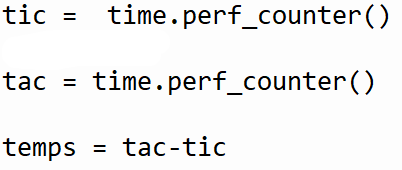

Tout d'abord, pour faire un jeu de réaction, il faut savoir avec quoi on va évaluer la réaction du joueur, ici nous avons décider d'utiliser le temps afin de savoir si le joueur est rapide.
Voici la modélisation de notre code python

Le joueur ne saura pas quand le "GO" apparaîtra grâce au package random entre 2 et 7, une fois le "GO" affiché le joueur tentera de cliquer le plus rapidement possible sur la touche "Entrée".
Le temps est affiché grâce à l'outil "print" et cette outil est directement relié à la variable "temps"
Le temps est calculer grâce à 2 variables appelés "tic" et "tac", pour calculer le temps il faut affecter "temps" à "tic" moins "tac". A l'interieur de ces 2 variables on y retrouve le package time qui permet donc de calculer le score du joueur et qui est relié directement à une troisième variable qui se nomme temps.
On va mettre une variable "a" et dans cette variable on y met l'outil "input()" qui signifie "Entrer".

Le package random permet de génerer des nombres aléatoires. Ici, nous avons utilisé cette outil pour faire en sorte que le "GO" apparaîsse aléatoirement entre 2 et 7 secondes.
Le package Time permet d'ajouter un délai après le lancement du jeu et à la fin du lancement du jeu.
Rawad : c'est occuper du code python
Ibrahim : c'est occuper de la page de présentation
Anass : c'est occuper de la partie conception et implementation (fournir les réponses)